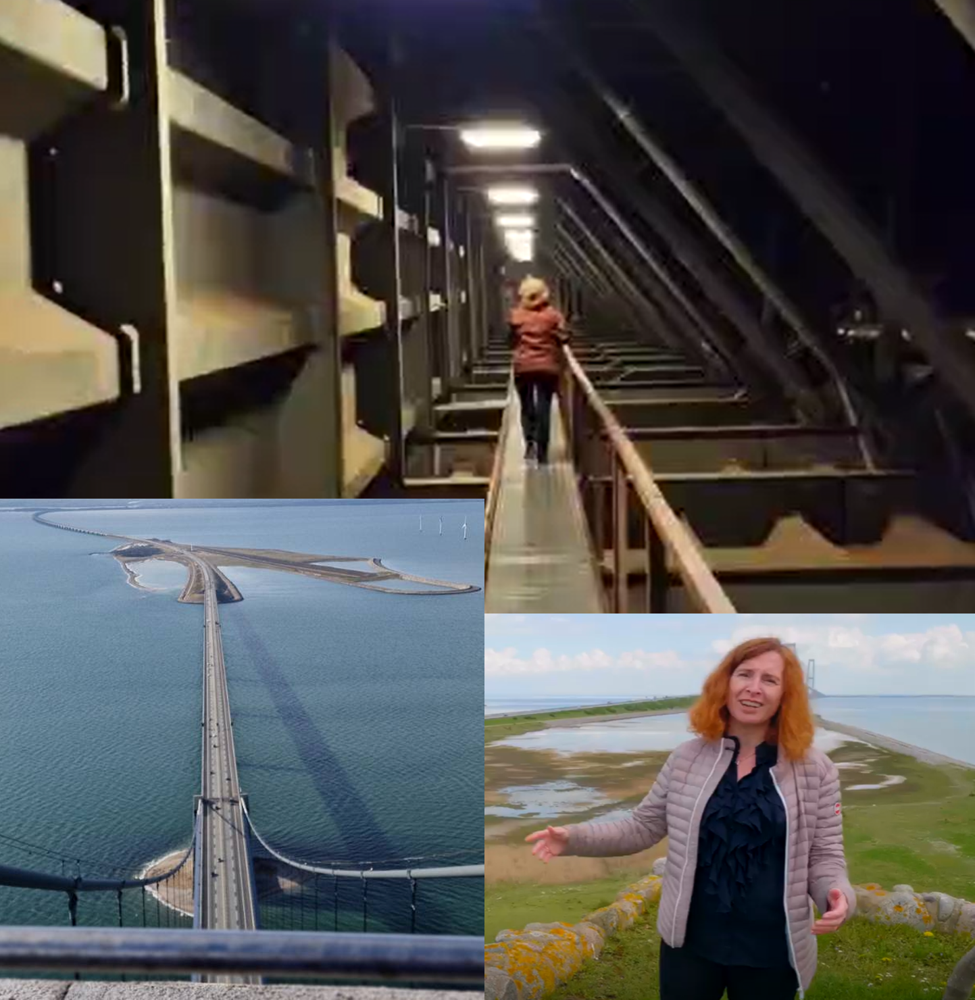

Case 1
Optimering og bæredygtighed i infrastrukturdrift
Udfordring: En større dansk infrastrukturvirksomhed stod overfor krav om både effektivisering og styrket fokus på ESG, med et årligt kontraktbudget i 100 mio. kr. klassen.
Min rolle: Som chefkonsulent ledede jeg procesoptimeringsaktiviteter, gennemførte dataanalyser og go-look-see-besøg på anlæg, og sikrede rapportering til topledelsen. Jeg arbejdede med at reducere spild i kontraktudbud og igangsatte nye digitale løsninger.
Resultater:
- Reducerede antallet af vagtordninger fra 11 til 8
- Forlængede levetiden på jernbaneskinner via tilstandsovervågning
- Introducerede smartere mobilitetsløsninger til håndværkere i tunneler
- Igangsatte digital overvågning af potentielle farer på broanlæg
- Afdækkede udfordringer og løsninger for fremtidigt vedligehold af jernbanemateriel